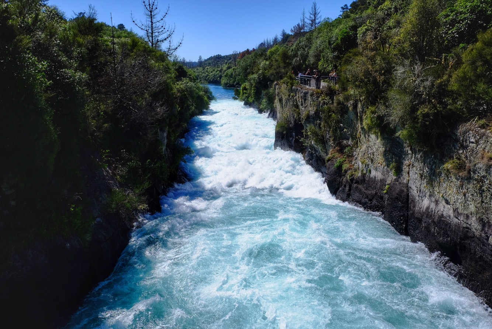

Z치hada s fazolema z m칳ho posledn칤ho p콏칤sp캩vku vyvolala velkou vlnu emoc칤 (nebo sp칤코e pocit beznad캩je), a tak jsem se rozhodl, 쬰 v치m uk치쬿 i bojovku, kterou dostala Lenka k narozenin치m. T콏eba si zlep코칤te chu콘, a to vy콏e코칤te. A nebo taky ne 游뗵
Bojovka se skl치dala ze t콏칤 캜치st칤. Rozlu코t캩n칤 jedn칠 캜치sti v쬯y vedlo k dal코칤.
Prvn칤m r칠busem byla str치nkahttp://cilf.cz/pranicko.html. Pokud rozlousknete tuto prvni stranku, dostanete se k tajence, kter치 sice byla sestrojena na m칤ru pro Lenku, ale vy si aspo켿 m콢쬰te vyzkou코et, jak moc n치s zn치te (nebo jak moc sledujete n치코 blog ;-)). Po vylusteni tajenky ziskate misto, kam se Lenka musela vydat pro prvni darek a n치sleduj칤c칤 instrukce, podle kter칳ch si m캩la doj칤t pro nov칳 po캜칤ta캜. Samoz콏ejm캩 pro t콏et칤 krok mus칤te zn치t odpov캩di z p콏edchoz칤ch 캜치st칤, abyste v캩d캩li, kde v tom Brn캩 se zrovna Lenka nach치zela, kdy obdr쬰la tyto instrukce:
——————
Je코t캩 T캩 캜ek치 jedna mali캜kost:
Vydej se t칤m sm캩rem, kter칳 NZ ostrov se n치m l칤bil v칤ce.
Na k콏i쬺vatce za tram zast치vkou odbo캜 na svou nep콏irozenou stranu.
Na konci ulice se po lev칠 stran캩 nal칠z치 t콏칤patrov치 budova.
콎ekni jim tam heslo ze sv칠ho 캜erven칠ho d치re캜ku.
——————
Do코li jste a pro po캜칤ta캜 nebo jste se zasekli na str치nce s p콏치n칤캜kem? 游뗵
Kdy jsem se po m캩s칤ci hled치n칤 pozice kontraktora (v칤c pen캩z ne zam캩stnanec) nedostal ani k jednomu pohovoru, usoudili jsme, 쬰 by to cht캩lo zm캩nit strategii. Za캜al jsem teda ps치t i na inzer치ty hledaj칤c칤 zam캩stnance na full-time na dobu neur캜itou. No a hned v prvn칤 vln캩 p콏ihl치코ek se zada콏ilo 游뗵
Po m캩s칤ci sezen칤 doma na zadku jsem si 콏ekl, 쬰 zv치쮂셠 jakoukoliv pr치ci v oboru. 콯e nebudu hledat v칳hradn캩 pozici Java Developera. A proto jsem se vydal na North Shore (15km z centra Aucklandu, 1hod mhd) na pohovor ke Chrisovi do firmy Bosun Technologies na pozici Full Stack Developera. Jeliko maj칤 pouze mal칳 kancl칤k uvnit콏 veterin치rn칤 kliniky, se코li jsme se ve vedlej코칤 kav치rn캩. Chris mi vypr치v캩l co d캩l치 jeho firma, j치 jsem mu zase 콏ekl n캩co o sob캩 a sv칳ch zku코enostech. Klasick칠 prvn칤 kolo pohovor콢. To bylo ve 캜tvrtek.
Je코t캩 ten ve캜er mi zavolal, jestli bychom se n치sleduj칤c칤 den dopoledne mohli potkat v centru na druh칠 kolo pohovoru, kde bychom 코li v칤ce do hloubky m칳ch technick칳ch znalost칤. Je to dobr칳, 콏ikal jsem si. Mam 코anci 游뗵
N치sleduj칤c칤 den jsem obl칠kl dal코칤 z nov캩 nakoupen칳ch ko코il speci치ln캩 za 칰캜elem vypadat profi na pohovorech a vyrazil. 콎e코ili jsme spolu jak funguj칤 internety, trochu s칤t칤, javascript콢, web콢 a v콢bec v코eho okolo. Bylo mi jasn칳, 쬰 v p콏칤pad캩 칰sp캩chu bude moj칤 pracovn칤 n치pln칤 v코echno jenom ne Java. Ale to nevad칤. Tak jako tak se budu hodn캩 u캜it. Jedna jeho speci치ln칤 ot치zka nebo sp칤코e mal칳 r칠bus mi utkv캩l v pam캩ti. M콢쬰te si sami zkusit, jestli byste na to p콏i코li:
M치te v치hu, kterou m콢쬰te jednou pou쮂셦. M치te 5 sklenic. V ka쬯칠 sklenici je 10 fazol칤. Jedna ze sklenic obsahuje fazole, kde fazole v치쮂 9 gram콢. V코echny ostatn칤 sklenice maj칤 fazole v치쮂셖칤 10 gram콢. Jak t칤m jedn칤m v치쬰n칤m zj칤st칤te, kter치 z t캩ch p캩ti sklenic obsahuje leh캜칤 fazole?
M치 se tim zjistit, jak 캜lov캩k p콏em칳코l칤. A jak funguje ve stresu – Kdy p콏ede m캩 polo쬴l telefon s b캩쮂셖칤m odpo캜tem na 2 minuty. Ka쬯op치dn캩 na 콏e코en칤 h치danky jsem p콏i코el a m캩l jsem z toho potom velkou radost 游뗵
V pond캩l칤 r치no m캩 Chris vzbudil telefon치tem, kdy mi ozn치mil, jestli mam opravdu o nab칤zenou pozici z치jem. 콯e on m치 z치jem o m캩 游뗵 A tak jsem jel hned dal코칤 den podepsat smlouvu.
콯e pr칳 se mu na vypsanou pozici p콏ihl치silo 112 쬴votopis콢. Z nich vybral 12 lid칤, se kter칳mi se se코el osobn캩. No a nakonec jsem dostal p콏ednost p콏ed jin칳m uchaze캜em, kter칳 m캩l sice v칤ce zku코enost칤 na pap칤콏e, ale m캩l men코칤 „drive“ ne j치. A콘 u to znamen치 cokoliv 游뗵
Chris m캩 nabral na seniorn칤 pozici. Akor치t se teda podle pohovoru nev칤, jestli jsem opravdu senior nebo ne. Tak쬰 m치m ve smlouv캩 „Intermediate Full Stack Developer“ s t칤m, 쬰 se b캩hem zku코ebn칤 doby t콏칤 m캩s칤c콢 uvid칤, jak n치m vyhovuje na코e spolupr치ce. A pokud pude v코echno podle pl치nu a j치 se osv캩d캜im, dostanu novou pracovn칤 nab칤dku u s pozic칤 seniora a zhruba 15% p콏id치n칤m na v칳plat캩.
V nov칠 pr치ci mam za sebou dva t칳dny. Tak je코t캩 trochu k samotn칠 pracovn칤 n치plni. Bude to trochu v칤ce technick칠, tak쬰 tomu te캞 mami asi nebude코 upln캩 rozum캩t 游뗵 Firma Bosun Technologies m치 na starosti n캩kolik projekt콢 a jedn칤m z nich je i syst칠m objedn치vek a vlastn캩 takov칳 eshop pro veterin치rn칤 kliniku (proto maj칤 sv콢j kancl칤k p콏칤mo tam). Na frontendu bootstrap 코ablona s jquery. Na backendu c# b캩쮂셖칤 v mono na ubuntu. V칳voj na MacBook Pro v sublime text. Deploy kop칤rov치n칤m jednotliv칳ch soubor콢 na server. Jedin칳 javascript soubor m치 asi p캩t tis칤c 콏치dk콢.
Z tohoto stavu v캩c칤 jsem byl na za캜치tku dost smutn칳. Takov칳 jakoby nemodern칤 zp콢sob v칳voje. Ale po dvou t칳dnech to nakonec vypad치 zaj칤mav캩, proto쬰 jako najat칳 senior mam mo쬹ost spoustu v캩c칤 zlep코it a bude to hodn캩 r콢znorod칠, tak쬰 se toho budu moci opravdu hodn캩 nau캜it. Prvn칤 t칳den jsem se bavil t칤m, abychom zautomatizovali nasazen칤. V칳sledkem je, 쬰 se pro v칳voj i na produkci pou쮂셨치 docker. A pro produk캜n칤 build se soubory automaticky stahuj칤 z git repozit치콏e, tak쬰 u 쮂멳n칠 ru캜n칤 kop칤rov치n칤. Te캞 se bav칤m doprogramov치n칤m mo쬹osti vr치cen칤 vadn칳ch produkt콢 v eshopu. A proto쬰 je c칤lem toto eshop 콏e코en칤 n치sledn캩 p콏eprod치vat, budu ho cel칠 p콏episovat do reactjs.
A co m칤 kolegov칠? Tak Chrise u trochu zn치te. P콢vodem Angli캜an, 쬴je se svoj칤 rodinou v Aucklandu p콏es p캩t let. V캩캜nej vtip치lek. M치 dost p콏ehled a vlastn캩 on je d콢vodem, pro캜 jsem kejvnul na tuhle pracovn칤 nab칤dku. V kancel치콏i tr치v칤 asi tak polovinu pracovn칤 doby.
Nastya je Ruska s asijsk칳mi p콏edky. Je j칤 asi 35 (na asiatech se to moc ned치 poznat) a v Aucklandu bydl칤 4 roky. Tolik je Ukrajinec a je mu asi tak 25. Vlastn캩 jsem se na jejich v캩k nikdy nezeptal..
Te캞, kdy u mam pr치ci, tak si m콢쬰me naj칤t n캩jak칠 p캩kn칠 bydlen칤 pobl칤. Zatim bydl칤me v centru a jedna cesta autobusem do pr치ce trv치 zhruba hodinu, co neni upln캩 ide치ln칤. Ale o tom zase n캩kdy p콏칤코t캩 游뗵
Kousek od pr치ce je pek치rna, kde se d치 za $7 ulovit takov칳hle ob캩dov칳 kombo Pohled na centrum cestou z pr치ce z autobusu. Kousek od t칳 v캩쬰 te캞 bydl칤me
Pro캜 bychom sem m캩li ps치t ka쬯ej den? Sorry jako. 游뗵
Ale popravd캩 to te캞 upln캩 nebylo na코칤 prioritou. Nav칤c jsme opustili cestovatelsk칳 re쬴m a pozvolna p콏e코li zp치tky do re치ln칠ho 쬴vota. A je to teda drsn칳.
Z m캩sta Rotorua jsme jeli tou nejp콏칤m캩j코칤 cestou do Aucklandu. Bylo tam po cest캩 je코t캩 p치r zaj칤mavost칤, ale proto쬰 byla p콏edpov캩캞 po캜as칤 naprd, tak jsme si 콏ekli, 쬰 se tam n캩kdy vr치t칤me z Aucklandu o v칤kendu. Je to pod dv캩 hodiny cesty.
Na prvn칤 dv캩 noci v nejv캩t코칤m m캩st캩 NZ n치m p콏칤st콏e코ek poskytl Ondra. T칤mto je코t캩 jednou velice d캩kujem 游뗵 M캩li jsme tak 코anci promyslet, jak p콏esn캩 chcem na za캜치tku postupovat. Vy코lo n치m z toho, 쬰 ne si najdem pr치ci, tak by to cht캩lo levn캩j코칤 ubytov치n칤. Do캜asn캩 tak bydl칤me kus za m캩stem (20min autem, 1hod busem do centra) u 캛칤켿ana p콏es airbnb. Klasickej bar치k okupujeme s dal코칤ma dv캩ma p치rama. Aspo켿 mi m치 kdo d캩lat spole캜nost p콏i ve캜e콏i, kdy Lena zevl칤 v posteli na skypu nebo u seri치l콢.
A co ty pr치ce? No j치 si hledam pozici Java Developer – vlastn캩 to, co jsem d캩lal v Praze. A proto쬰 se toho nebojim, hledam seniorn칤 pozici. Jako쬰 jsem hodn캩 zku코enej a dobrej v tom, co d캩lam. Tak uvid칤me, jestli to klapne 游뗵
Jinak je to podobn칳 jak v 캛esku. Jsou tu dva typy mo쬹osti spolupr치ce. Bu캞 jako contractor (na코e OSV캛) nebo klasickej zam캩stnanec. A jako u n치s, contractor bere daleko v칤c a je placenej od hodiny. Nav칤c jsou tu kontrakty fixn칤 (v캩t코inou s mo쬹ost칤 prodlou쬰n칤) na 3 nebo 6 m캩s칤c콢. Tak쬰 pro m캩 ide치lka, jestli se budeme vracet do 캛R. Na druhou stranu kontraktorsk칳ch pozic neni tolik. T콏eba ka쬯치 des치t치. Tak쬰 tomu dam je코t캩 tak tejden nebo dva a pokud se nezada콏칤, tak bych za캜al zkou코et i ty zam캩stnaneck칳 pozice. Akor치t tam je to komplikovan캩j코칤. Jednak si myslim, 쬰 se upln캩 firmy nepohrnou do nab칤r치n칤 bl치zna, co se nejsp칤코 za p콢l roku vytrat칤. D치le mi v칤zum zakazuje m칤t permanentn칤 pozici, tak쬰 bych si musel domluvit, aby mi na jinak permanentn칤 smlouvu dali datum ukon캜en칤 spolupr치ce. A nebo by mi museli zasponzorovat pracovn칤 v칤zum. No je to legrace 游뗵
A jsem z toho hled치n칤 trochu ne코콘astnej, proto쬰 tu pracujou hodn캩 s AWS nebo hledaj Full Stack Developery, jako쬰 k Jav캩 hledaj i AngularJS nebo React v jednom. Moc tomudle p콏칤stupu nerozumim, ale je to tak. Co m캩 teda trochu diskvalifikuje, proto쬰 ani s jednim moc zku코enost칤 nemam. AWS jsem se rozhodl dohnat, tak se te캞 u캜im na AWS Solutions Architect certifikaci. Abych se p콏i tom 캜ek치n칤 na pohovory moc nenudil. A pak za캜nu doh치n캩t i ten frontend. Tak proto bylo psan칤 p콏칤sp캩vk콢 odsunuto na druhou kolej.
No a Lenka si zatim hled치 cokoliv pobl칤, kde te캞 bydl칤me. Proto쬰 pl치n je takovej, 쬰 j치 si najdu pr치ci, pak si pobl칤 m칳 pr치ce najdem bydlen칤 a pak si Lenka najde n캩co v okol칤.
No tak co je코t캩 bych v치m pov캩d캩l? V캜era (1. 4.) tu byl v칳znamn칳 den. M캩l jsem narozeniny 游 Lenka o m캩 cel칳 den pe캜ovala (v칤ce ne obvykle). K ob캩du mi uva콏ila moj칤 obl칤benou rajskou om치캜ku, jako dezert pak upekla cheesecake. A dostal jsem kokosov칳 olej, tak쬰 jsem si mohl vychutnat moc p콏칤jemnou mas치 游뗵 A j치 si v캜era dop콏치l hned t콏i sprchy! A 10km b캩h k tomu.
Zaj칤mav칳, jak칳 v코echny v캩ci 캜lov캩k bere맠a samoz콏ejm칳. Po 4 m캩s칤c칤ch str치ven칳ch v aut캩 si na na코em airbnb moc u쮂셨치me:
na z치chod (hlavn캩 v de코ti) se nemus칤 ven ke stromku
캜lov캩k si m콢쬰 kdykoliv dop콏치t (teplou) sprchu
nemus칤 se 콏e코it, jak moc je nabitej notebook nebo powerbanka
stabiln칤 wifi internet
lednice chlad칤 sama od sebe a nemus칤 se do n칤 tak kupovat zmra쬰n칳 potraviny nebo chlazen칳 pivko, aby udr쬰la teplotu – narozd칤l od na코eho chlad칤c칤ho boxu
no a vlastn칤 pra캜ka taky neni upln캩 k zahozen칤 游뗵
Tak zas n캩kdy p콏칤코t캩 游땔
Kam to asi vede? #nofilterKdy j치 chodim po meet upech, abych n치vazal kontakty kv콢li pr치ci, Lenka mezitim zevl칤 v parku a fot칤 takov칳hle n치dhery.Na pohovory to cht캩lo trochu lep코칤 oble캜en칤Park nedaleko od Ondrovo bytu. Dost v centru m캩sta.Pohled na downtown cestou z jednoho pohovoru.Zbytek narozeninov칠ho cheesecake. Rajskou vyfocenou nemam, ta byla hned sn캩zen치 游뗵
Vydali jsme se na dal코칤 zv칤콏ec칤 farmu. Pravideln칳 캜ten치콏 si ji jist캩 pov코iml, 쬰 se n캩jak podez콏ele 캜asto vyskytujeme na t캩chto m칤stech. A nen칤 tomu n치hodou. Lenka by si toti po n치vratu do 캛R cht캩la tak칠 zalo쬴t zv칤콏ec칤 farmu, kde by si d캩ti캜ky z Brna mohly pohladit a pochovat r콢zn치 domac칤 zv칤콏ata. 콯e prej to je jej칤 celo쬴votn칤 sen. A kdo jsem j치, abych j칤 po jej칤ch snech 코lapal, 쬰? Tak쬰 se sna쮂셠e nav코t칤vit ka쬯ou farmu v okol칤, abychom na캜erpali inspiraci 游뗵 A jak치 쬰 byla tahle farma?
Velkou v칳hodou Lilliput Farm Fun & Animal Park bylo mno쬽tv칤 strom콢 na jejich pozemku. Ty tak poskytovaly p콏칤jemn칳 st칤n jak pro n치s, tak pro zv칤콏ata. D치le potom jednoduch치 okru쬹칤 cesta, po kter칠 se 코lo a 캜lov캩k tak vid캩l v코echna zv칤콏ata a nemusel moc 콏e코it, kudy se m치 vlastn캩 vydat. Ze zv칤콏at n치s nejv칤ce bavil chlupatej b칤lo코edivej osl칤k a b칤lej papou코ek. Ten si nata쬰n칤m pa콏치tku vynutil svezen칤 na ruce a v콢bec se mu necht캩lo zp치tky na bid칳lko. Musela n치s zachr치nit majitelka farmy a pt치ka zp치tky nal치kat na k콏upku 游뗵 Upln캩 nejlep코칤 bylo, 쬰 se papouch nechal hladit. A m캩l rad코i chlapy ne 쬰nsk칳. A nem캩l r치d d캩ti. Prost캩 spr치vnej charakter 游뗵 Sympatick칳 taky bylo mal칳 pras치tko, kter칳 se p콏ipojilo k 캜lov캩ku na za캜치tku farmy a cel칳 okruh n치m d캩lalo spole캜nost.
P콏i opou코t캩n칤 farmy jsme si v코imli let치ku s farmou s 캜erstv칳m ml칠kem. Tak쬰 v치m m콢쬰 b칳t hned jasn칠, kam se n치sledn캩 ub칤rala na코e cesta 游뗵 Lenka op캩t podojila automat o litr lahodn칠ho 캜erstv칠ho ml칠ka a je코t캩 k tomu jsme pokecali se zjevn캩 se nud칤c칤m farm치콏em.
D치le jsme nav코t칤vili Huka Falls. Ciz칤m obr치zkem n칤쬰 si u코et콏칤m 1000 slov. V bro쬿콏e psali, 쬰 prej tudy za 11 vte콏in prote캜e jeden olympiskej stadion. Moc si to teda nedovedu p콏edstavit, kdy vezmem 코atny a tribuny a parkovi코t캩 a b콢hv칤 co je코t캩. Ale tak asi to bude pravda, kdy to tam p칤코ou.
Ne, nepo콏칤dili jsme si drona. Je to ciz칤 obr치zekPohled z mostu nahoruPohled z mostu doluUpln캩 dolePovinn치 selfie fotka
N치sledovala n치v코t캩va Craters Of The Moon. Za mal칳 poplatek si 캜lov캩k mohl proj칤t asi hodinovou cestu jakoby m캩s칤캜n칤 krajinou se spousty kou콏칤c칤mi kr치tery. Pt치te se, pro캜 kou콏칤? Mezi m캩sty Taupo a Rotorua se nach치z칤 aktivn칤 geoterm치ln칤 p콢da, tak쬰 skoro ka쬯치 코kv칤ra tady vypou코t칤 p치ru se siln칳m sirn칳m z치pachem (asi jako zka쬰n칳 vejce). Je tu tak칠 spoustu tepl칳ch (a hork칳ch) pramen콢, 콏ek, vodop치d콢, gejz칤r콢 a r콢zn칳ch bublaj칤c칤ch (va콏칤c칤ch) jez칤rek.
Smrd칤, smrd칤 to to smrd칤
Po kr치terech se Lenka do캜kala vytou쬰n칠 sprchy. U jsem vypozoroval, 쬰 po p치r dnech bez mo쬹osti si umejt hlavu se Lenka za캜ne jakoby m캩nit 游 A 캜lov캩k pak moc nechce bejt pobl칤 t칠 nov칠 Lenky 游 Ka쬯op치dn캩 sprcha byla pouze kra콘ou캜k치, proto쬰 jsme jednak museli mazat na dal코칤 atrakci a druhak byla ve콏ejn치 placen치, tak쬰 tekla p콏esn캩 4 minuty. V칳born치 p콏칤le쬴tost tr칠novat pozitivn칤 my코len칤. Tak쬰 se mi Lenka vr치tila ze sprchy cel치 usm캩vav치, proto쬰 byla moc r치da za tu skv캩lou a jedine캜nou p콏칤le쬴tost si umejt hlavu a v콢bec vlastn캩 nenad치vala a nebyla nasran치, 쬰 ta sprcha byla moc kr치tk치 a 쬰 pak sl칤ben치 studen치 voda u netekla a 쬰 nestihla tohle a tamto. Dob콏e no, bylo to p콏esn캩 opa캜n캩 游
Posp칤chali jsme, proto쬰 p콏esn캩 ve 캜ty콏i hodiny odpoledne nechaj na chvilku protejkat m칤stn칤 vodn칤 elektr치rnu. D칤ky tomu m치 캜lov캩k mo쬹ost vid캩t, jak se skalnat칳 ka켿on postupn캩 zapl켿uje vodou a do divok칠 콏eky.
T칤m bylo m캩sto Taupo vy캜erp치no a pokra캜ovali jsme severn칤m sm캩rem. Cestou jsme potkali baz칠nek s teplou vyv캩raj칤c칤 vodou jm칠nem Butchers Pool (콏ezn칤kovo baz칠n). Pamatujete, jak jsem mluvil o t칳 geoterm치ln칤 aktivit캩, 쬰? Tak tady si to obetonovali a ud캩lali tak z toho takov칳 ve콏ejn칳 neplacen칳 l치zni캜ky 游뗵 Voda ale byla dost 코pinav치, tak jsme si pouze ocachtali nohy.
Dal코칤 zast치vkou byla Hot’n’Cold 콏eka. Velice zaj칤mav칳 칰kaz, kde se spojuj칤 dva prameny. Jeden je studen칳 a druh칳 hork칳. D칤ky tomu si koupaj칤c칤 se 캜lov캩k v soutoku m콢쬰 jednodu코e „nastavit“ tu spr치vnou teplotu. Super relax zadarm칤ko m칤ste캜ko. No j치 tam byl naprosto v zenu. Lenka o trochu m칠n캩 游 Proto쬰 si po ohro쬰n칤 쬴vota am칠bou v minul칳ch miner치ln칤ch l치zn칤ch vyp캩stovala f칩bii na teplou miner치ln칤 vodu obsahuj칤c칤 tuhle m캩켿avku. Na코t캩st칤 se po chvilce uvolnila a oba jsme si tak mohli u쮂셦 tohle skv캩l칳 m칤ste캜ko.
Docela nabit칳 den, co? Za캜alo se stm칤vat a my na코li 칰to캜i코t캩 na jednom opu코t캩n칠m parkovi코ti. Zelen칳 tr치vn칤캜ek vedle auta n치s je코t캩 vyzval k cvi캜en칤, po kter칠m jsme upadnuli do postele (nebo co to v tom aut캩 vlastn캩 m치me).
St콏eda
Po probuzen칤 jsme zkontrolovali Mud Pool, kter칳 se nach치zel hned u na코eho parkovi코t캩. Velk칠 bahnit칠 jez칤rko, kter칠 nep콏etr쬴t캩 bubl치 a vyd치va roztomil칠 zvuky. N캩jakym zvl치코tn칤m zp콢sobem je pro m캩 pozorov치n칤 bublaj칤c칤cho bahna stejn캩 uspokojiv칠 jako sledov치n칤 vodop치du.
N치sledovala proch치zka na vrcholek Rainbow Mountain. Bylo to napl치novan칠 tak, abychom nahoru dorazili kousek p콏ed 10:15, proto쬰 v tento 캜as se um캩le aktivuje (nasyp치n칤 m칳dla) jeden z velk칳ch gejz칤r콢 o kousek vedle v placen칠m parku. Bohu쬰l jsme 쮂멳n칳 gejz칤r nevid캩li :-/ Alespo켿 jsme na druh칠 stran캩 kopce spat콏ili 칰chvatn캩 vypadaj칤c칤 kope캜kovitou krajinu.
Po ob캩d캩 jsme dorazili do m캩sta Rotorua. Nejd콏칤ve jsme se pro코li po m칤stn칤m sekvojov칠m lese. Zastavili jsme se na vyhl칤dce, odkud byl vid캩t dal코칤 gejz칤r. Ten m캩l vrcholit jednou a dvakr치t za hodinu. Kdy jsme tam dorazili, tak gejz칤r tro코ku prskal. Tak 쬰 si na tu erupci po캜k치me. Po hodin캩 캜ek치n칤 gejz칤r p콏estal fr캜et upln캩. V tu chv칤li jsme si uv캩domili, 쬰 celou tu dobu jsme vlastn캩 koukali na to nejlep코칤, co ten gejz칤r dovede. No nevad칤.
Vlevo jemn캩 st콏칤kaj칤c칤 – hlavn캩 캜oud칤c칤 – gejz칤r
Z kni쬹칤ho pr콢vodce Rough Guide (d칤ky Karti캜ovi s Veru za skv캩l칳 d치rek 游뗵 ) jsme se dozv캩d캩li, 쬰 m칤stn칤 pt치ci nemus칤 sed캩t na vejc칤ch. Pro캜? No p콏ece proto쬰 je zdej코칤 p콢da d칤ky geoterm치ln칤 aktivit캩 tak tepl치 游뗵 A te캞 tuhle blbost u nikdy nezapomenete 游땔 Jo a ty sekvoje tu rustou t콏ikr치t rychleji ne v jejich domovsk칠 Californii. Toliko asi k nau캜n칳m zaj칤mavostem.
Vodn칤 hladina vypadaj칤c칤 jako sklo
S autem zaparkovan칳m docela v centru m캩sta jsme 코li obhl칤dnout okol칤. Nejd콏칤ve zahrady. Jak jinak ne pln칠 sirn칳ch smradlav칳ch bublaj칤c칤ch jez칤rek. V centru m캩sta jsme si dali bo쮂 to캜en칠 pivko s je코t캩 skv캩lej코칤ma k콏칤dlama. Mus칤me se p콏ece za to bydlen칤 v aut캩 taky n캩kdy trochu rozmazlit 游뗵 Potom jsme zabrousili do dal코칤ho parku, kde jsme objevili baz칠nky s teplou vodou hlubok칠 tak akor치t na pono콏en칤 nohou. Jenom 코koda, 쬰 byly obklopen칠 he코tegama, 치캜kama nebo prost캩 asiatama. I tak jsme se vm치캜kli a chvilku dali ji docela uchozen칳m nohou odpo캜inout v tepl칠 smradlav칠 l치zni.
Po parku jsme se ji za캜li vracet zp치tky k autu. Posledn칤m zaj칤mav칳m m칤stem byla p콢vodn칤 maorsk치 vesnice. Dnes u vlastn캩 takov칠 men코칤 chud코칤 p콏edm캩st칤. Ze skoro ka쬯칠ho kan치lu se tu line v코udyp콏칤tomn치 sirn치 p치ra. Opravdu cel칠 m캩sto smrd칤 po zka쬰n칳ch vejc칤ch. V pr콢vodci tvrdili, 쬰 si na to 캜lov캩k po chv칤li zvykne. NE! Neni tomu tak 游뗵
Prvn칤 na programu dne byla n치v코t캩va Waikoropupu Springs. 칔dajn캩 druh치 nej캜ist캩j코칤 voda na sv캩t캩. Prvn칤 je n캩jakej zmra쬰nej kus ledu na Antarktid캩. Pramen to je opravdu 칰chvatn칳. Obrovsk칠 mno쬽tv칤 vody vyv캩r치 jakoby odnikud a cel칠 je to dopln캩n칠 kachnama a kr치snou vegetac칤 okolo. Koupat se v tom ale ned치. Je to posv치tn칳, tak쬰 se toho 캜lov캩k nem콢쬰 ani dotknout. Tak jsme se moc dlouho nezdr쬰li.
Pak jsme nav코t칤vili jeskyniRawhiti Cave. Ta je zaj칤mav치 t칤m, 쬰 zde kr치pn칤ky 쬴jou v symbi칩ze s mechama. Dohromady tvo콏칤 fialovo-코edo-zelen칳 les v칤ce jak tis칤ce stalagn치t콢. Ale proto쬰 do jeskyn캩 se d치 pouze nahl칠dnout z vyv칳코en칠 plo코iny, ani tady jsme se dlouho nezdr쬰li. Zmlsanej zdej코칤ma jeskyn캩ma nabit칳ma dobrodru쬹칳m prol칠z치n칤m a sv칤t칤c칤ma 캜ervama tuhle posledn칤 jeskyni hodnotim jako t캩쬶ou nudu.
먝
Inu vydali jsme se sm캩rem k tracku Abel Tasman. Nejv캩t코칤mu turistick칠mu l치kadlu zdej코칤 oblasti. Cestou jsme ov코em맗otkali farmu, kter치 nab칤z칤 캜erstv칠 ml칠ko. Lenka se upln캩맙pla코ila a 쬰 prej se tam ur캜it캩 mus칤me zastavit. Oto캜ili jsme to a ten automat jsme podojili o litr 캜erstv칠ho ml칠ka. Lenka z toho byla upln캩 v rau코i. 콯e prej to hodn캩 pila, kdy byla mal치. Je ale pravda, 쬰 to ml칤ko chutnalo opravdu dob콏e a cel칳 litr jsme vypili na posezen칤.
Tohle dojen칤 by j칤 코lo
Posiln캩ni 캜erstv칳m ml칠kem jsme si dali proch치zku jm칠nem The Grove –맓imestone boulder garden jungle. D쬿ngle pln치 v치pencov칳ch kamen콢. Krati캜k치, ale zajimav치.
Na span칤 jsme zaparkovali hned u silnice, kde pr칳 n캩jak치 pani ka쬯칳 r치no v sedum hodin prud칤, 쬰 se tam nesp칤 p콏esp치vat. 콎ekli jsme si, 쬰 j칤 o코치l칤me a na콏칤dili si bud칤ka na 6:30 游땎
St콏eda
Opravdu se n치m povedlo vst치t brzo r치no a vyrazit k severn칤 캜치sti Abel Tasmana. 맓i jsme 캜치st odTotaranui k Separation Point a zp캩t. Dohromady okolo patn치cti kilometr콢. Cestou jsme potkali opravdu zlatav칠 pl치쬰 a na sam칠m konci i p치r lachtan콢. Ale druh칠 V치noce se u Lenky dostavily ve chv칤li, kdy kolem n치s proplaval tu캜켿치k! Byl zrovna na lovu. O chv칤li pozd캩ji jsme ho spat콏ili je코t캩 jednou na druh칠 stran캩 Separation Pointu. Je to vskutku zaj칤mav칳 pohled vid캩t tyhle zvi콏치tka v jejich p콏irozen칠m prost콏ed칤. No co v치m budu pov칤dat, zase jsem맕emohl Lenu tam odsud dostat 游
Cestou zp치tky jsme dali na jedn칠 z pl치쮂 koupa캜ku. Voda ale byla moc studen치 a na slun칤캜ku to zase moc p치lilo. Nav칤c si Lenka (kdy jsme se od za캜치tku pl치novali koupat) zapomn캩la ru캜n칤k 游 Tak쬰 jsme na pl치쬴 moc nepobyli a razili jsme zp캩t k autu.
No a abychom ze sebe smyli tu slanou vodu, zam칤콏ili jsme si to k vodop치du. Nebyl 코patnej, ale d캩lal hroznej r치mus, a proto jsme si na코li koupac칤 m칤ste캜ko kousek po 콏ece. Voda byla ukrutn캩 ledov치 a nav칤c na n치s bylo hrozn캩 moc vid캩t z p캩코칤맊esty vedouc칤 k vodop치du. Co zjistila zrovna Lenka, kdy n캩jakej p치n s 칰sm캩vem na tv치콏i hodnotil jej칤 zadek v tang치ch. Co zase hodnotila zcela negativn캩 p치novo man쬰lka. No j치 se bavil멇릦
캛tvrtek
Cel칳 Abel Tasman trek je v칤cedenn칤. Nejobvyklej코칤 varianta trv치 3 dny a 캜lov캩k b캩hem t칠to doby mus칤 sp치t v m칤stn칤ch ofici치ln칤ch chat치ch. Kter칠 jsou ale jednak docela drah칠 a druhak hodn캩 dop콏edu zamluven칠. Ani jedno n치m moc nehr치lo do karet, a tak jsme zvolili variantu vid캩t kousek ze severn칤 캜치sti a kousek z ji쬹칤 캜asti. R치no jsme se nechali lod칤 dov칠zt kus po sm캩ru ch콢ze (do Anchorage bay)마 do코li jsme si to zp치tky k autu. Nejvtipn캩j코칤 bylo, 쬰 jsme se nalodili u na sou코i u kancel치콏e lodn칤 spole캜nosti a a traktor n치s dot치hl맕a pl치 a nacouval s n치ma do mo콏e 游땎
Lenka si cestu lod칤 moc neu쬴la, proto쬰 po rann칤m kafi se j칤 ukrutn캩 cht캩lo na z치chod. I kdy 캜콢rala t캩sn캩 p콏ed odplutim. Ale zvl치dla to a udr쬰la to. Jinak ji쬹칤 캜치st tohoto treku jsme shledali dosti nudnou마 ani cesta lod칤 to nezachr치nila. Asi u jsme zmlsan칤 zdej코칤 p콏칤rodou. P콏ece jenom m치me mo쬹ost toho vid캩t daleko v칤c ne b캩쬹칳 turista, kter칳 prol칠tne cel칳m맑i쬹칤m ostrovem za dva t칳dny.
Rozp콢len칳 k치men. A jak치 je va코e teorie zp콢sobu rozp콢len칤?
Odpoledne jsme si dali relax a pro코li jsme si m캩ste캜ko Motueka. Centrum v podstat캩 pod칠l hlavn칤 cesty. Moc toho tam nem캩li, tak jsme si aspo켿 u par캜칤ku uva콏ili moc dobr칠 krevety se zeleninou a quinou.
P치tek
Hlavn칤m programem byla n치v코t캩va Animal Farm. Ale ta otev칤rala a v deset. Co bylo super, proto쬰 jsme kone캜n캩 mohli dospat. Je코t캩 jsme se cestou stavili pro zrovna nasb칤ran칠 캜erstv칠 jahody. A v콢bec. Tady na severu (kde je tepleji) je spoustu sad콢 a plant치쮂, tak쬰 se tady hojn캩 vyskytuj칤 podomn칤 prodeje vyp캩stovan칳ch produkt콢 p콏칤mo ze zahrady, co je super. Ale m칤sto v칳b캩r캜칤ho pen캩z tam 캜lov캩k potk치 jenom d칤rku na pen칤ze. 콎칤kaj tady tomu Honesty Box. Prost캩 star치 dobr치 poctiv치 platba za odebran칠 zbo쮂.
Na farmu jsme dorazili o p콢l jeden치ct칠. Co bylo pr치v캩 v캜as se porozhl칠dnout a p콏ipravit se na koz칤 z치vod, kter칳 startoval v jeden치ct. Docela legra캜n칤 program (sp칤코e pro d캩ti). 캛ty콏i mlad칠맒oz칤 z치vodnice se vypust칤 ze startovac칤 klece a mus칤 dob캩hnout asi pades치t metr콢 p콏es r콢zn칠 p콏ek치쬶y a do c칤lov칠 p치sky, kde na n캩 캜ekaj칤 lahve s ml칤kem. Jinak jsme tam vid캩li spoustu zv칤콏치tek – k prohl칠dnut칤 na fotk치ch. Cenu za roztomilost suver칠nn캩 vyhr치li mal칤 pa코칤ci a ml치d캩 p치va 游땎 A Lenka si op캩t potvrdila (po Vietnamu), 쬰 m치 jak칠si spojen칤 vy코코칤ho druhu s vodn칤m b콢volem멇릦Jinak v porovn치n칤 se zv칤콏ec칤 farmou v Kaikou콏e se n치m tahle zd치la moc velk치 a roztahan치.
Pot칠 jsme se stavili u mal칠 pob콏e쬹칤 promen치dy. Nic n치s tam ale j칤deln캩 nezaujalo, a tak jsme sp치chali michan치 vaj칤캜ka s paprikou. Co n치s ale velice zaujalo byl obch콢dek s klobouky. J치 u jsem se dlouhou dobu porozhl칤쬰l po ne캜em, co by m캩 ochr치nilo p콏ed zdej코칤m vra쬰dn칳m slunkem a nem캩lo to rovn칳 k코ilt 游땎 A Lenka mi tady vybrala slam치k 游땎 Nav칤c byl v bezkonkuren캜n칤 akci jeden za $10 nebo dva za $10, a tak si teda Lenka vybrala taky jeden. Ten jej칤 princeznovskej m콢쬰te vid캩t n칤쬰 na fotkach, ten muj t콏eba n캩kdy p콏칤코t캩 游땎
Odpoledne jsme dorazili do m캩sta Nelson. Lenka si v obchod캩 se sportovn칤ma pot콏ebama vym캩nila reklamac칤 boty, kter칠 se j칤 po p치r dnech no코en칤 rozlepily, za nov칠. Tak schv치ln캩, jak dlouho vydr쮂 tenle p치r. Taky vyreklamovala leg칤ny, kter칠 se za캜aly neskute캜n캩 p치rat. Bohu쬰l zde u stejn칠 nem캩li, a tak jsme nena코li n치hradu a vr치tili n치m pen칤ze. Co je sice fajn, ale ne tak moc pro Lenku, kter치 si je zamilovala. 콯ivot je boj no. Abychom trochu pozvedli n치ladu, koupili jsme aspo켿 n치u코nice 游땎 A hned bylo zase dob콏e 游땎 Pro코li jsme si kousek m캩sta pod칠l 콏eky a zam칤콏ili do auta. P콏ece jenom toho u dneska bylo dost.


{kind=link}
{kind=link}
{kind=link}
{kind=link}
{kind=link}
{kind=link}
{kind=link}
{kind=link}
{kind=link}
{kind=link}
{kind=link}
{kind=link}
{kind=link}
{kind=link}
{kind=link}
{kind=link}